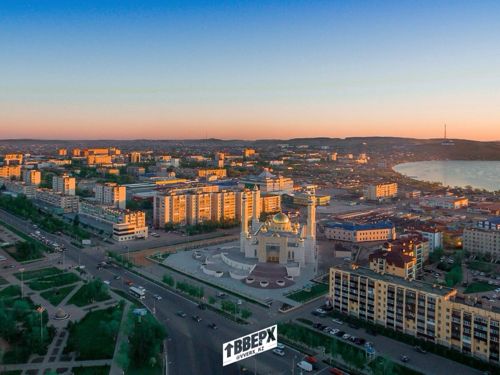
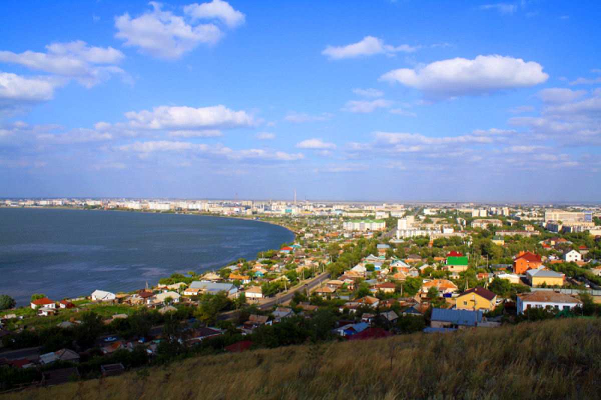
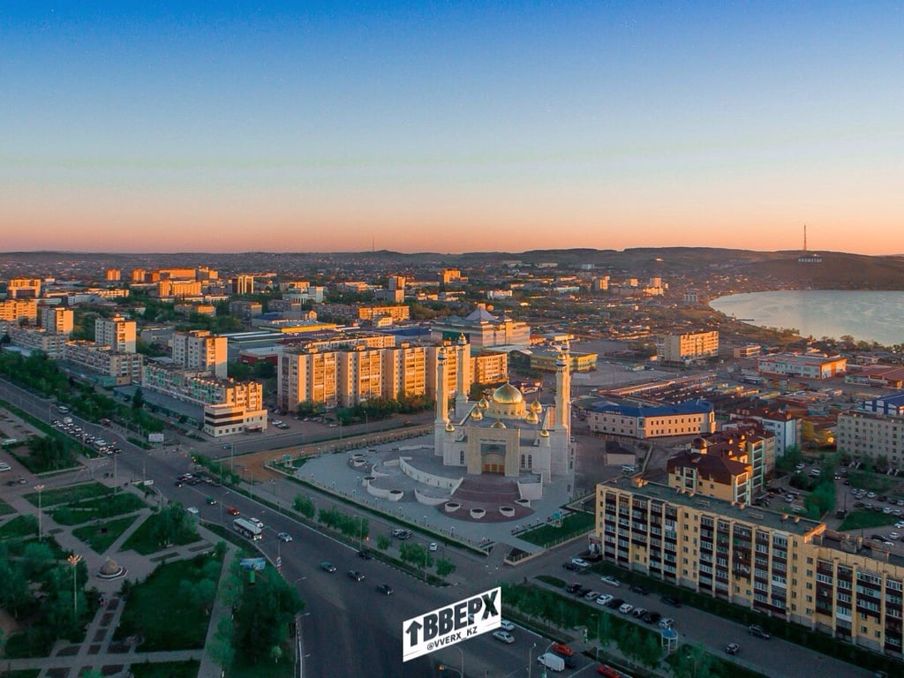
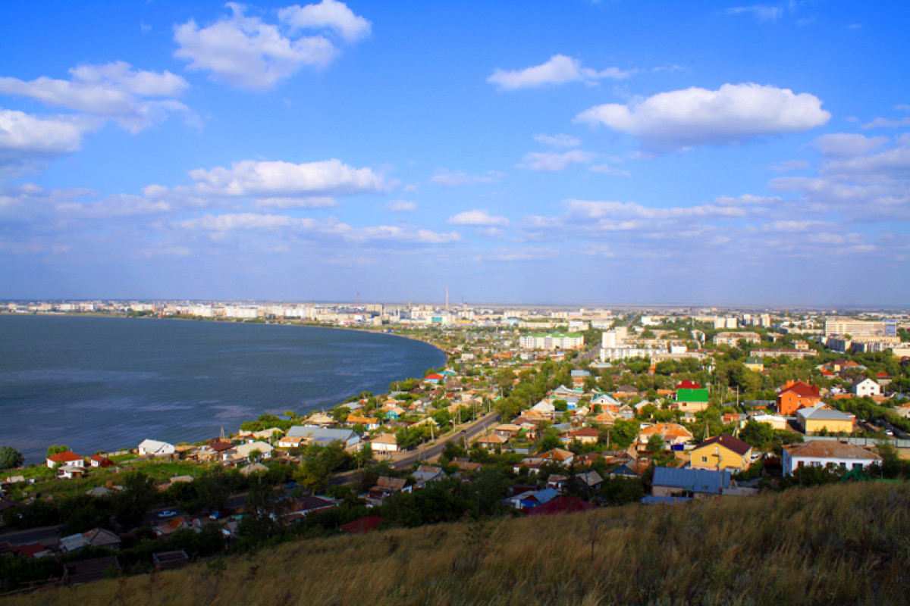

It is the administrative center of the Kokshetau District. The city has a population of around 130,000 people and is known for its beautiful nature, including the nearby Lake Kopa.
Some popular tourist attractions in Kokshetau include the Kokshetau State Historical and Cultural Reserve, which features the ruins of an ancient settlement and the Kokshetau Regional Museum, which has exhibits on the history and culture of the region. The city also has several parks and gardens, such as the Central Park, the Botanical Garden, and the Park of Culture and Leisure.
Kokshetau is also a great place for:
 


